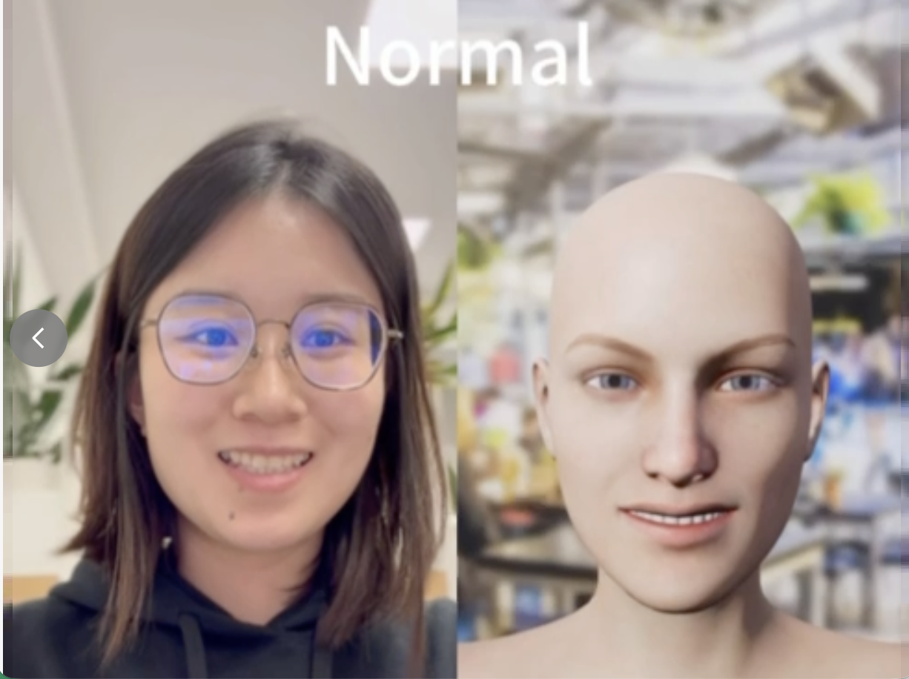

Research Assistant · NIPG Group · Department of Artificial Intelligence · ELTE
Emotion-driven
Virtual Avatar.
I built a real-time system that detects facial Action Units, interprets emotional signals, and drives a virtual avatar in real time.
01 / The question
What if an avatar
didn't just copy you?
Traditional facial animation focuses on recognition and mirroring. I wanted to explore what happens when an avatar can detect an emotional signal — and deliberately transform it.
02 / From face to feeling
Detection is the
foundation.
The main idea is what happens after detection: interpreting emotion, transforming it, then rendering a response.
detection
mapping
representation
transformation
03 / The transformation
One signal.
Two possible responses.
Rather than simply mirroring the user's expression, the system transforms its emotional direction in Valence–Arousal space before the signal reaches the avatar.
Mirroring, with intent.
The avatar preserves the user's emotional direction: you smile, the avatar smiles.

Normal preserves valence and arousal.
04 / It runs in real time
Not a concept.
A responsive system.
05 / Evidence
Evaluated, not
just demonstrated.
The system was assessed at both the algorithm and rendered-perception levels, including an external EmoNet observer.
Algorithm-level alignment
Arousal correlation / rendered avatar
06 / What the system revealed
Emotion is not
a category.
Recognising an emotional signal is only the beginning. Turning it into an interaction requires interpretation, transformation, and feedback.
The 41-to-18 AU reduction revealed a gap between detected facial signals and what a simplified avatar can actually express.
Valence–Arousal made that limitation visible as a continuous space — and made deliberate emotional incongruence testable.
07 / Next directions